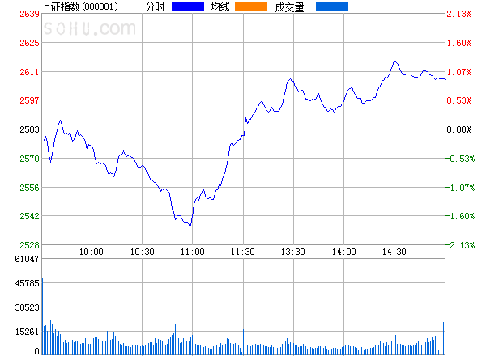

4 图形
4.1 插入图片
方式一：Markdown插入。
方法简单，但不能自动编号，而且输出html和pdf时显示结果会不一致。
- 插入网络图片：
 - 插入本地图片：
（子目录images下），显示为：

方式二： R Mardown插入。
用knitr函数 knitr::include_graphics() 插入图形（图4.1）（设置了宽度等于页面的50%，居中）。
knitr::include_graphics("images/run.jpg")Figure 4.1: 插入本地图形
用 include_graphics() 插入图形有如下优点：
- 不必担心文档的输出格式。LaTeX的pdf中插入图形命令是
\includegraphics{}，在Markdown中插入图形命令是，它们互相不认。而函数include_graphics()会自动选择插入方式。 - 无论是插入图形还是由R生成的图形，控制图形属性的指令（
out.width等）都含义相同。 - 可以对所有图形设置相同的大小比例。如本文设置
out.width = '75%'。
所以，最好是统一使用Rmd的插图方法。
4.2 R做图
R作图可以指定大小和对齐方式（见图4.2）。
par(mar = c(4, 4, 0.1, 0.1))
plot(pressure, pch = 19)
Figure 4.2: 图形指定大小和位置
如果一幅图里有多个子图，必须设 fig.show='hold'，并排图形加起来宽度不能超过文本宽度。如两个子图并排，每个不能超过50%4。
见图4.3。
par(mar = c(4, 4, 0.1, 0.1))
plot(pressure, pch = 19, type = "b")
plot(cars, pch = 19)

Figure 4.3: 两个图形并排
4.3 一个ggplot2作图的例子
软件包ggplot2(Wickham et al. 2018)是R中可视化的利器，作者是Hadley Wickham。“gg” 表示 “Grammar of Graphics”的意思，作图理念是分图层，
Plot（图形） = data（数据） + Aesthetics（美学） + Geometry（几何）
包括:
- data 指数据框(data frame)
- Aesthetics标明x和y变量，以及控制图形的颜色、大小、数据点的形状、柱形的高低等美学特征
- Geometry 表示图形的几何形状（直方图、箱线图、密度图等）
- 统计变换（Statistics）：对数据进行某种汇总，如直方图，或将二维关系用线性模型解释
- 标度（Scale）：将数据的取值映射到图形空间，例如用：颜色、大小、形状表示不同取值
- 坐标系（Coordinate）：数据如何映射到图形所在平面，提供作图所需的坐标轴和网格线
- 分面（Facet）：将数据分解为子集，进行联合展示
- 图层（Layer）：对所需的绘图操作进行一层一层叠加，最终得到所需图形
下面具体介绍一个用ggplot2作图的例子5。
4.3.1 散点图
library(ggplot2)
p <- ggplot(data = mpg, mapping = aes(x = cty, y = hwy))
p + geom_point()
Figure 4.4: ggplot2 with points
第一行指定数据集、映射（坐标轴），第二行表示在p的基础上加上点，geom表示的是 geometric object（几何对象）（见图4.4）。
mpg是ggplot2里面的一个关于汽车的数据集。
- cty：city miles per gallon
- hwy：highway miles per gallon
- year：year of manufacture
- displ：engine displacement, in litres
- cyl：number of cylinders
- class：“type” of car
4.3.2 变换颜色
按生产年份以颜色区分，factor(year))是把年份转化为因子形式（相当于定类变量）, 见图 4.5。
p <- ggplot(mpg, aes(x = cty, y = hwy, colour = factor(year)))
p + geom_point()
Figure 4.5: ggplot2 with points colors
4.3.3 拟合曲线
再加一行 + stat_smooth()，其中stat表示 statistical transformation，做了统计平滑拟合直线，以及置信区间, 见图 4.6。
p + geom_point() + stat_smooth()
Figure 4.6: ggplot2 with smooth trends
4.3.4 变换大小
上图的数据点明显偏小，可以让这些数据点随着汽车排量的大小而变化, 见图 4.7。
p + geom_point(aes(colour = factor(year), size = displ)) + stat_smooth() # 排量越大，点越大
Figure 4.7: ggplot2 with variable point size
4.3.5 修改透明度
数据点太密集，增加透明度，解决点与点之间的重叠的问题, 见图 4.8。
p + geom_point(aes(colour = factor(year), size = displ), alpha = 0.5) + stat_smooth() +
scale_size_continuous(range = c(4, 10))
Figure 4.8: ggplot2 with transparent points
alpha=0.5 在aes()的外面，代表对所有的点都强制透明度为0.5。
4.3.6 图形分层
1999年与2008年数据点全部挤在一块，太拥挤了，应采用分层，见图 4.9。
p + geom_point(aes(colour = class, size = displ), alpha = 0.5) + stat_smooth() +
scale_size_continuous(range = c(4, 10)) + facet_wrap(~year, ncol = 1)
Figure 4.9: ggplot2 with facets
facet_wrap()是facet与wrap两个词组合，表示逐面包起来。~year表示按变量year分层，将1999与2008分开。ncol = 1代表小窗口是1列，指定了1列之后，默认就是两行（因为年份一共只有两种）。如果不加这句，会默认横着排列，或者想要指定几行，则使用nrow = 1。- 这里颜色指定了
colour = class，代表不同种类的汽车。 - 添加了
scale_size_continuous(range = c(4, 10))，指定size的变化范围。在本图中，就是控制点的绝对大小的范围， 不要太大，也不要太小。
4.3.7 添加中文标注
默认情况下图形是不能出现中文的，要使得中文在图形中正常显示，必须在文档开头的output下面加上： dev: "cairo_pdf"，也可以在R代码中加上pdf.options(family="GB1")。
p + geom_point(aes(colour = class, size = displ), alpha = 0.5) + stat_smooth() +
scale_size_continuous(range = c(4, 10)) + facet_wrap(~year, ncol = 1) + labs(y = "每加仑高速公路行驶距离",
x = "每加仑城市公路行驶距离", title = "汽车油耗与型号", size = "排量", colour = "车型") +
theme(text = element_text(family = "STHeiti"), plot.title = element_text(hjust = 0.5))
Figure 4.10: ggplot2中显示中文
图 4.10中，
labs()修改的是标签的名称。theme()主题，更偏向于格式的修改。text = element_text(family = "STHeiti")是对字体进行修改，变为黑体。Windows系统可以不添加这行，一样会显示前面labs()中设定的中文。而如果是Mac或者Linux系统，由于字体的缺失，会显示成一个一个的框框，在图像上显示不了中文字。plot.title = element_text(hjust = 0.5)调整标题的位置，不加这行，标题会居左，加上才会居中。hjust = 0.5其实就是左右移动的意思，0.5表示居中。